Eficaz — Plataforma de dados de uma rede de clínicas Eficaz — Data platform for a clinic network
Entrei como desenvolvedor e analista de dados e assumi também a infraestrutura: um servidor herdado, sem versionamento, com quase tudo rodando como root e cheio de vulnerabilidades e problemas de LGPD. Em 8 semanas entreguei uma plataforma isolada, versionada, com backup testado e ambiente de teste. Hoje ela roda as 22 apps internas de uma rede com 5 unidades de medicina e odontologia e 3 franquias de cartão de benefícios. I joined as a developer and data analyst and also took on the infrastructure: an inherited server with no version control, nearly everything running as root and riddled with security and LGPD (data protection) issues. In 8 weeks I delivered an isolated, versioned platform with tested backups and a staging environment. It now runs the 22 internal apps of a network with 5 medical and dental units and 3 benefit-card franchises.
Ponto de partida Starting point
O servidor herdado tinha 41 serviços soltos no systemd, 27 crons e 22 de 23 apps rodando como root. O código vivia em pastas, sem Git (uma mesma pasta servia 15 projetos). Dez apps usavam a chave de administrador do banco, inclusive uma página pública, e boa parte do conhecimento tinha saído junto com quem cuidava do servidor. Na prática, um servidor cheio de vulnerabilidades e de problemas de LGPD.
The inherited server had 41 loose systemd services, 27 cron jobs and 22 of 23 apps running as root. Code lived in folders with no Git (a single folder served 15 projects). Ten apps used the database admin key, including a public page, and much of the know-how had left with whoever ran the server. In practice, a server riddled with security vulnerabilities and LGPD (data protection) issues.
Antes de mexer em qualquer coisa, medi tudo com um script que nunca imprime segredo: serviços, apps, crons, dependências entre pastas e uso de banco. O levantamento virou um plano de migração em 17 capítulos, mantido até hoje como registro de decisões.
Before touching anything, I measured everything with a script that never prints a secret: services, apps, crons, cross-folder dependencies and database usage. The survey became a 17-chapter migration plan, still kept as the decision log.
Arquitetura Architecture
A regra central foi separar a integração de dados dos painéis. Cada app ganhou container próprio, rede interna própria até o banco e limite de memória. O Traefik é a única entrada, atrás do proxy, e produção e teste rodam em servidores distintos, de provedores diferentes.
The core rule was to separate data integration from the dashboards. Each app got its own container, its own internal network to the database and a memory limit. Traefik is the single entry point, behind the proxy, and production and staging run on separate servers from different providers.
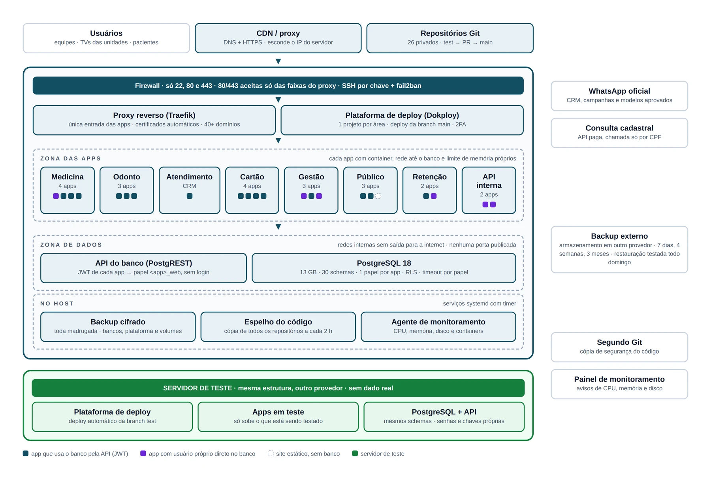
- Migração em ondas, sem queda: cada app subiu primeiro num domínio de teste, foi conferida com os dados e só então recebeu o domínio final. Os endereços antigos respondem com 308. No caminho, Next 14 → 16 e Node 24, e três apps saíram do SQLite para o Postgres com o histórico importado.
- Wave migration, no downtime: each app first went up on a test domain, was checked against the data and only then got its final domain. Old addresses answer with a 308. Along the way, Next 14 → 16 and Node 24, and three apps moved from SQLite to Postgres with their history imported.
- Banco: um PostgreSQL 18 no lugar dos bancos espalhados, com um papel por app e só as permissões que ela usa. PostgREST com JWT por app, RLS,
statement_timeoutpor papel e log de consultas lentas. - Database: one PostgreSQL 18 instead of scattered databases, with one role per app holding only the permissions it uses. PostgREST with per-app JWT, RLS, per-role
statement_timeoutand a slow-query log. - Isolamento: redes overlay internas, sem saída para a internet, entre cada app e o banco. Uma app não enxerga a outra, e nenhuma porta de app fica exposta.
- Isolation: internal overlay networks, with no internet egress, between each app and the database. No app can see another, and no app port is exposed.
- Fluxo de produção: branch de teste → pull request →
main→ deploy. 26 serviços passaram a sair damain, e o servidor de teste recebe deploy automático da branch de teste, sem dado real. - Release flow: test branch → pull request →
main→ deploy. 26 services now ship frommain, and the staging server auto-deploys the test branch, with no real data.
Segurança e LGPD Security and LGPD
As vulnerabilidades e os problemas de LGPD do servidor herdado foram todos corrigidos, e a plataforma segue em melhoria contínua.
Every vulnerability and LGPD (Brazil's data protection law) issue on the inherited server was fixed, and the platform keeps under continuous improvement.
- Menor privilégio: nenhuma app roda como root nem usa a chave de administrador do banco. Cada uma tem só as permissões que usa, e uma app não enxerga a outra.
- Least privilege: no app runs as root or uses the database admin key. Each has only the permissions it uses, and no app can see another.
- Acesso por pessoa: contas compartilhadas viraram uma conta por pessoa, com papéis por unidade. No servidor, SSH só por chave, um usuário por pessoa, root restrito e fail2ban.
- Per-person access: shared accounts became one account per person, with per-unit roles. On the server, key-only SSH, one user per person, restricted root and fail2ban.
- Superfície mínima: firewall próprio (só 22, 80 e 443, com a web aceitando só as faixas do proxy), nenhuma porta de app exposta e nada publicado fora da plataforma de deploy, sempre com HTTPS.
- Minimal surface: a custom firewall (only 22, 80 and 443, with web traffic accepted only from the proxy ranges), no exposed app port and nothing published outside the deploy platform, always on HTTPS.
- Dados pessoais: segredos e dados sensíveis tirados do código, dados clínicos sensíveis fora da integração, API com visões sem dados pessoais por padrão, registro de cada consulta cadastral, monitor de uso que não guarda IP, e teste e treinamento só com dados fictícios.
- Personal data: secrets and sensitive data removed from code, sensitive clinical data kept out of the integration, an API with personal-data-free views by default, every registry lookup logged, usage monitoring that stores no IP, and testing and training on fictitious data only.
- Recuperação: backup cifrado diário (borg) em outro provedor, com restauração testada todo domingo, espelho do código a cada 2 h e roteiro para refazer o servidor do zero.
- Recovery: daily encrypted backups (borg) to another provider, with restores tested every Sunday, a code mirror every 2 h and a runbook to rebuild the server from scratch.
- Melhoria contínua: atualizações de segurança de dependências aplicadas em todas as apps no mesmo dia, e monitoramento de CPU, memória, disco e containers com avisos.
- Continuous improvement: dependency security updates rolled out to every app on the same day, and CPU, memory, disk and container monitoring with alerts.
O que construí What I built
Integração de dadosData integration 200+ commits
Os painéis dependem dos dados das próprias unidades, que ficam em três sistemas de gestão. Refiz a integração do zero: um serviço isolado por sistema, cada um em container próprio e com papel próprio no banco.
The dashboards depend on the units' own data, which lives in three management systems. I rebuilt the integration from scratch: one isolated service per system, each in its own container and with its own database role.
- Atualização por prioridade: hoje a cada 5 min, próximos 7 dias a cada 15 min, o resto de hora em hora e o histórico só no fim de semana. As frequências são medidas e mostradas num painel próprio.
- Priority-based updates: today every 5 min, the next 7 days every 15 min, the rest hourly and history only at weekends. Frequencies are measured and shown on a dedicated dashboard.
- Sem buracos: uma rotina completa sozinha os dias em que a integração ficou parada e relê o histórico desde 2025.
- No gaps: a routine backfills any day the integration was down and re-reads history back to 2025.
- Exclusão lógica: a integração marca a linha como removida em vez de apagar, e 26 visões foram ajustadas para filtrar a marca.
- Soft delete: the integration flags rows as removed instead of deleting them, and 26 views were adjusted to filter the flag.
- Avisos padronizados por e-mail nos serviços e relatório técnico em PDF.
- Standardized email alerts across the services and a technical report in PDF.
Painel de produção médicaMedical production dashboard 55+ commits
Fusão de dois painéis antigos num só, com Médicos, Colaboradores, Conversão, Pós-Consulta e Produção, em layout para TV, desktop e tablet, com temas claro e escuro.
Two old dashboards merged into one, with Doctors, Staff, Conversion, Follow-up and Production, laid out for TV, desktop and tablet, in light and dark themes.
- Dado ao vivo junto do fechado: visões que juntam os dias fechados com o dia de hoje, e aviso na tela quando a integração ainda não chegou no período, para ninguém ler atraso como queda de produção.
- Live data next to closed data: views that join closed days with today, and an on-screen notice when the integration hasn't reached the period yet, so nobody reads a delay as a drop in production.
- Análise: média móvel, previsão de 30 dias com faixa provável e curva do caixa por hora com previsão de fechamento.
- Analysis: moving average, a 30-day forecast with a likely range and an hourly cash curve with a closing forecast.
- Metas: lançadas por unidade a partir de .xlsx, .csv ou link de planilha do Google, com conferência antes de gravar.
- Targets: entered per unit from .xlsx, .csv or a Google Sheets link, with a review step before saving.
- Regras de negócio em código, com data de vigência e teste.
- Business rules in code, with effective dates and tests.
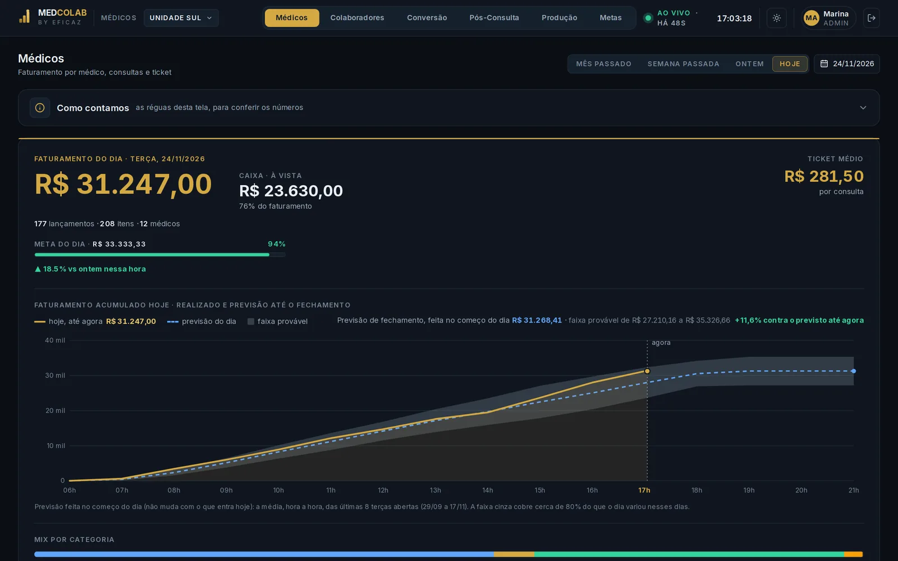
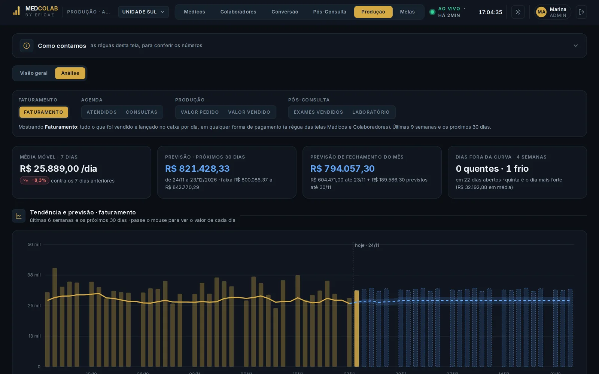
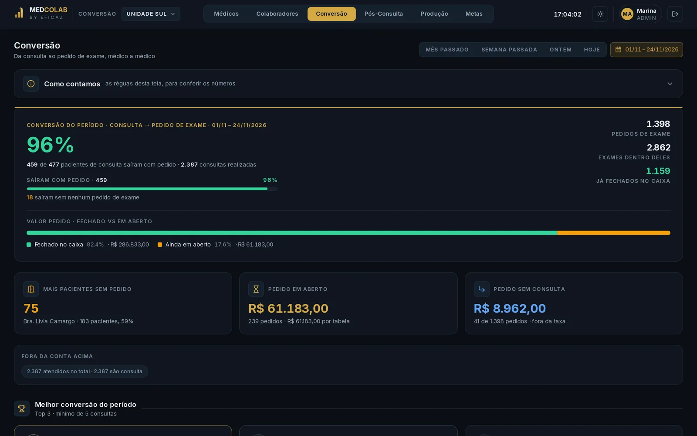
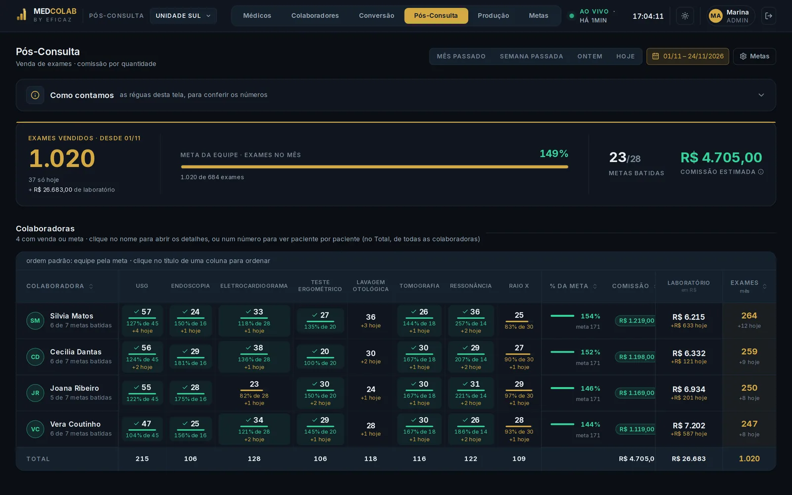
Agendas e TVs das unidadesUnit schedules and TVs
As agendas das clínicas ganharam banco próprio e papéis por clínica, com hoje e amanhã ao vivo, a carga de cada médico e um relógio que diz quando vem a próxima atualização. Nas recepções e no call center, as TVs mostram o placar da equipe e o caixa da unidade em ciclo.
The clinics' schedules got their own database and per-clinic roles, with today and tomorrow live, each doctor's load and a clock showing when the next update comes. At the front desks and the call center, the TVs cycle through the team scoreboard and the unit's cash.
- Todas as agendas das 5 unidades numa visão só, com meta por dia.
- Every schedule across the 5 units in a single view, with a daily target.
- Quadro 16:9 que não corta em outros formatos e uma conta por recepcionista no lugar da conta compartilhada.
- A 16:9 board that never crops on other screen shapes, and one account per receptionist instead of a shared one.
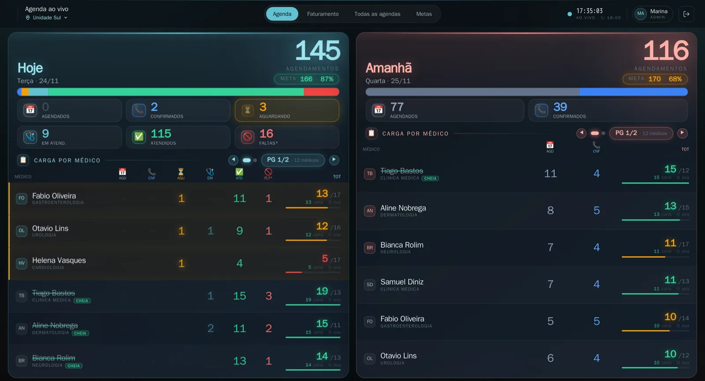
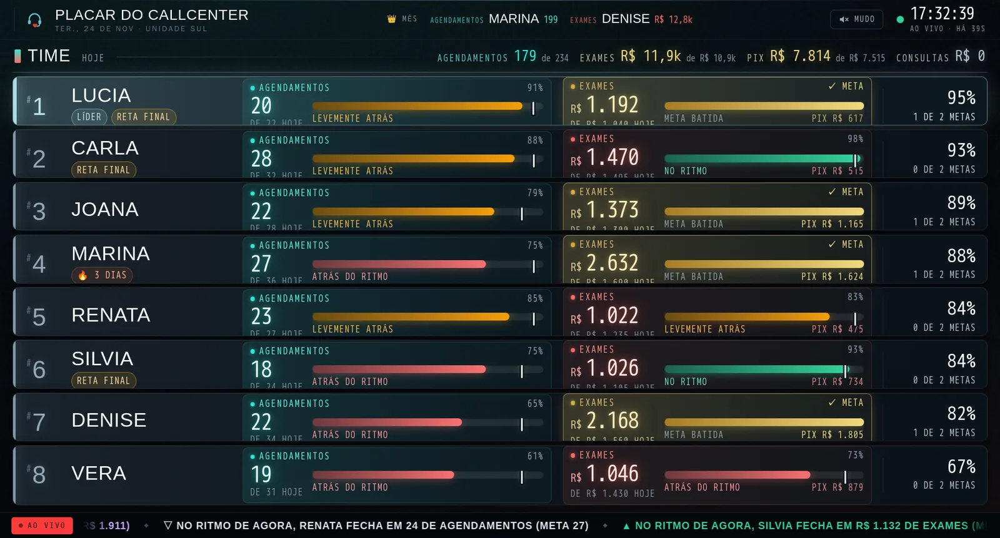
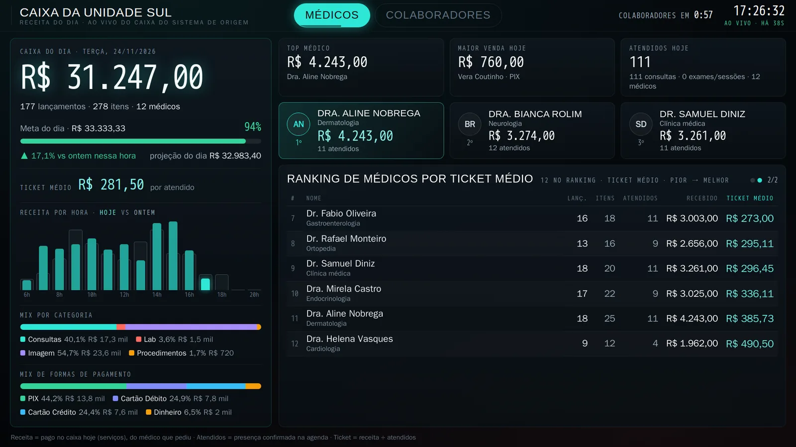
Painel de odontologiaDental dashboard app novanew app
Substitui dois painéis antigos: agenda ao vivo por dentista, receita, caixas e avaliadores, com schema e identidade visual próprios e os mesmos padrões de conta e período das outras apps.
Replaces two old dashboards: live schedule per dentist, revenue, cash registers and evaluators, with its own schema and visual identity and the same account and period patterns as the other apps.
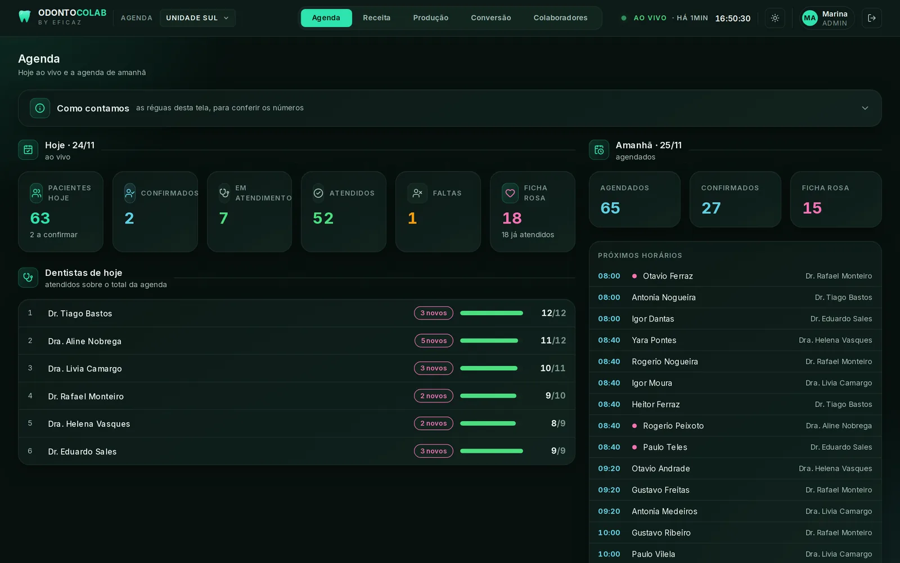
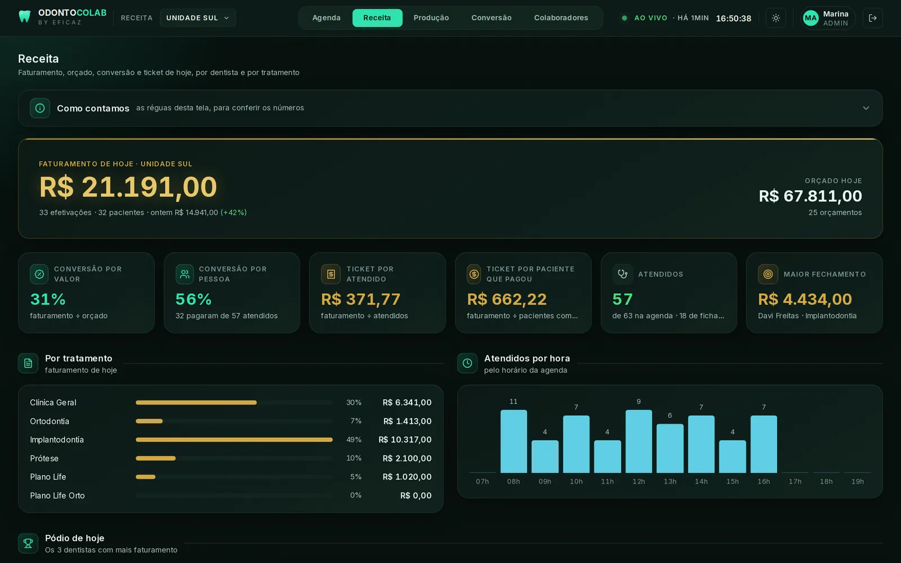
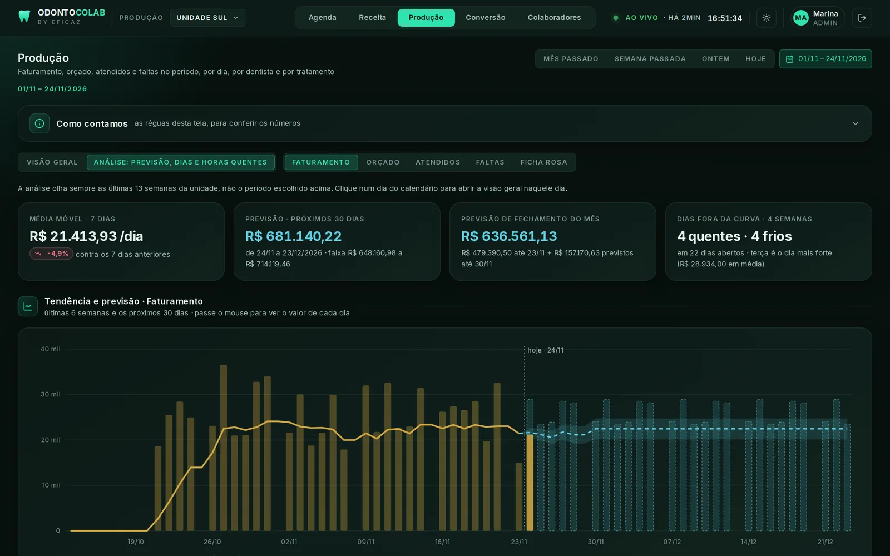
CRM de atendimento por WhatsAppWhatsApp support CRM 100+ commits
CRM sobre a API oficial do WhatsApp, com unidades, canais e papéis (agente, supervisor, admin), e distribuição das conversas entre quem está com login ativo.
A CRM on the official WhatsApp API, with units, channels and roles (agent, supervisor, admin), routing conversations to whoever is logged in.
- Webchat próprio com foto, vídeo, áudio, documento, localização, citar e reagir nos dois lados.
- Custom webchat with photo, video, audio, documents, location, quoting and reactions on both sides.
- Menu e respostas automáticas por canal, respeitando a janela de 24 horas, com modo teste por número.
- Per-channel menus and auto-replies, respecting the 24-hour window, with a per-number test mode.
- "Uma pessoa, um dono": cada contato tem um chat só e uma responsável, com transferência e motivo de finalização.
- "One person, one owner": each contact has a single chat and a single owner, with transfers and closing reasons.
- Disparos com rampa diária, limite por número impossível de furar e 12 modelos aprovados; relatórios com comparação entre períodos, placar por pessoa e funil.
- Broadcasts with a daily ramp, a per-number limit that can't be bypassed and 12 approved templates; reports with period comparison, per-person scoreboard and funnel.
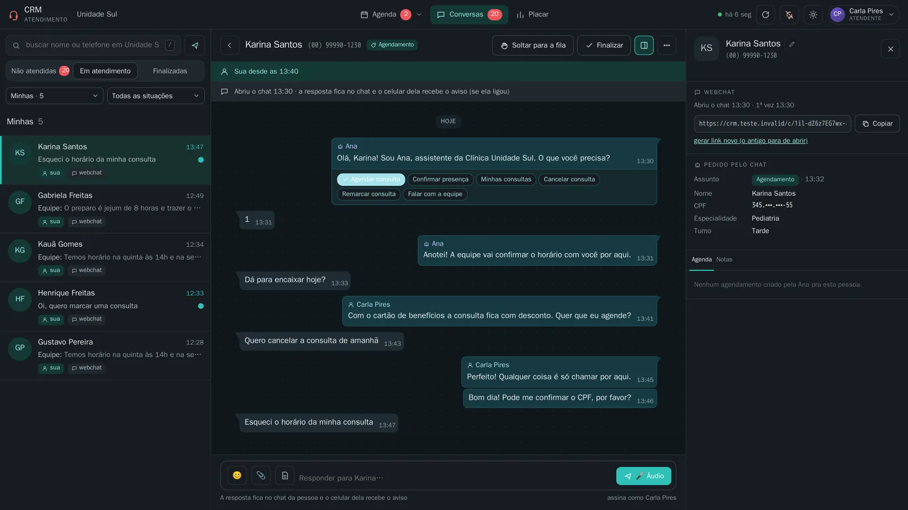
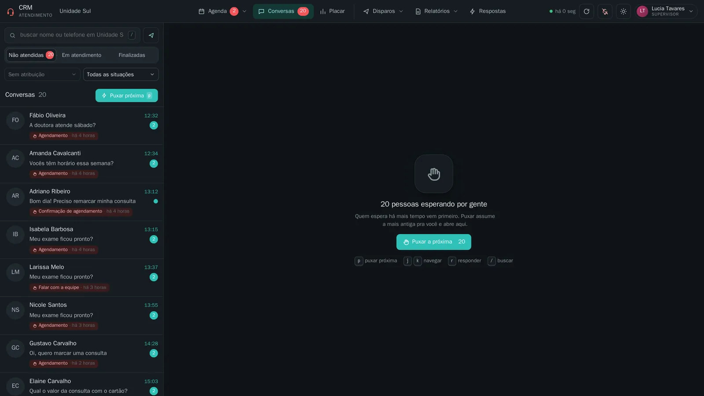
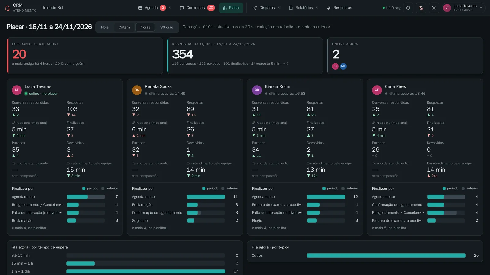
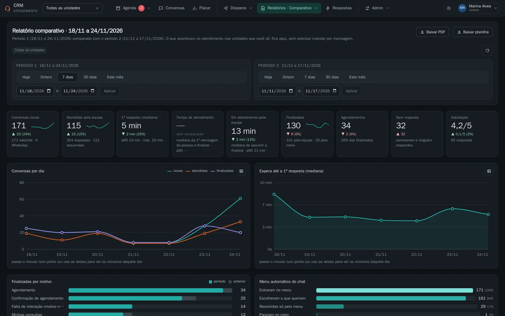
Cartão de benefícios e retençãoBenefit card and retention
Painel de retenção refeito no padrão das apps, com login por pessoa e leitura direta do banco, e as ferramentas da operação do cartão em volta dele.
The retention dashboard rebuilt to the apps' standard, with per-person login and direct database reads, plus the tools the card operation runs on.
- Consulta cadastral individual e em lote: base interna primeiro e API paga só quando precisa, com registro de cada consulta.
- Registry lookup, single and in bulk: internal data first and the paid API only when needed, with every lookup logged.
- Página pública de adesão com o cartão cifrado no navegador e aberto só pela gestão.
- Public sign-up page with the card encrypted in the browser and opened only by management.
- Gerador de vouchers, painel de território e livro-caixa das franquias.
- Voucher generator, territory dashboard and franchise cash book.
- Análises sob demanda: públicos para campanhas cruzando bases e mapa de calor de desfiliações por bairro.
- On-demand analysis: campaign audiences built across datasets and a heat map of cancellations by neighbourhood.
E o que fica por baixo de tudoAnd what sits underneath it all
- Contas por e-mail iguais nas 22 apps: login, "esqueci a senha", minha conta e administração de usuários, com papéis por unidade.
- The same email accounts across all 22 apps: login, password reset, my account and user admin, with per-unit roles.
- API interna de leitura para outras equipes e parceiros: chave por empresa, limite por IP, visões sem dados pessoais por padrão e documentação OpenAPI 3.1 gerada do catálogo do banco.
- Internal read API for other teams and partners: a key per company, per-IP limits, views without personal data by default and OpenAPI 3.1 docs generated from the database catalog.
- Chat interno das unidades (Mattermost) publicado sem nenhuma porta aberta, e agendas dos gestores unificadas com importação conferida tabela a tabela.
- Internal chat for the units (Mattermost) published with no open port, and the managers' calendars merged with a table-by-table checked import.
- Conferência de interface por captura de tela em três larguras e dois temas antes de publicar, e README detalhado por repositório.
- Screenshot-based UI checks at three widths and two themes before publishing, and a detailed README per repository.
Um problema difícil A hard problem
- SintomaSymptom
- Uma tela mensal do painel médico passava do tempo limite e, quando travava, derrubava as outras telas junto.A monthly view on the medical dashboard timed out and, when it hung, took the other views down with it.
- MediçãoMeasurement
- Antes de mexer, medi: a compilação JIT do PostgreSQL custava cerca de 1,6 s por consulta, e as consultas pesadas disputavam o mesmo banco com o resto da plataforma.Before changing anything, I measured it: PostgreSQL's JIT compilation cost about 1.6 s per query, and the heavy queries competed for the same database as the rest of the platform.
- CorreçãoFix
- Desliguei o JIT só para o papel do painel e limitei a 4 pedidos simultâneos por app.Disabled JIT only for the dashboard's role and capped each app at 4 concurrent requests.
- ResultadoResult
- A tela voltou a abrir e parou de derrubar as outras, sem mudar nada no resto do banco.The view loads again and no longer takes the others down, with nothing changed for the rest of the database.